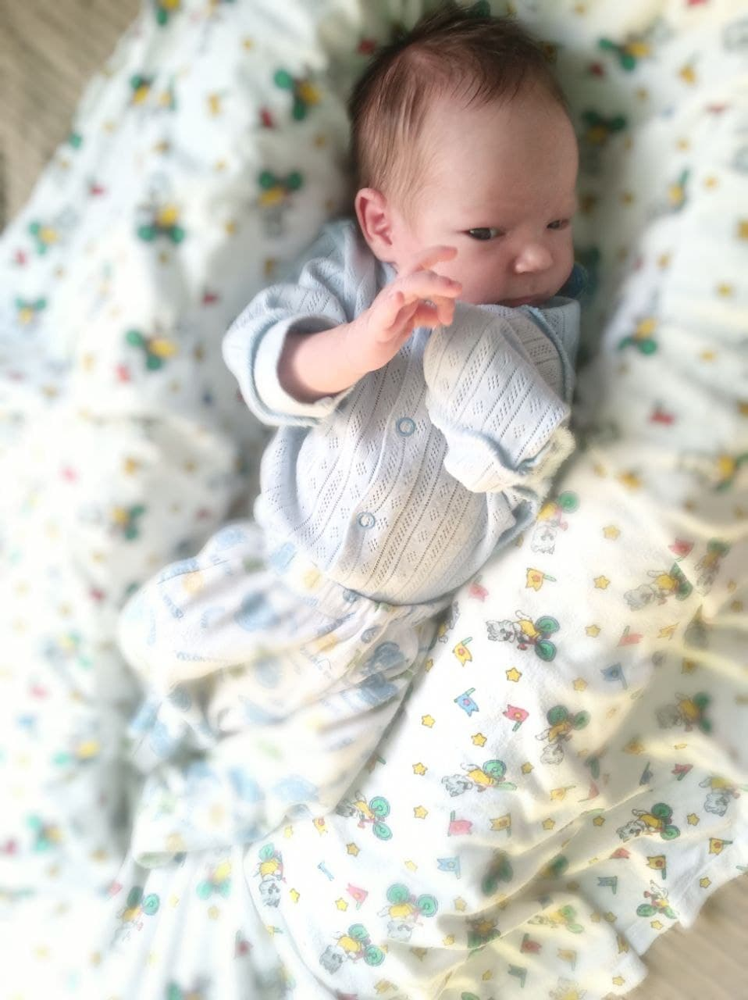
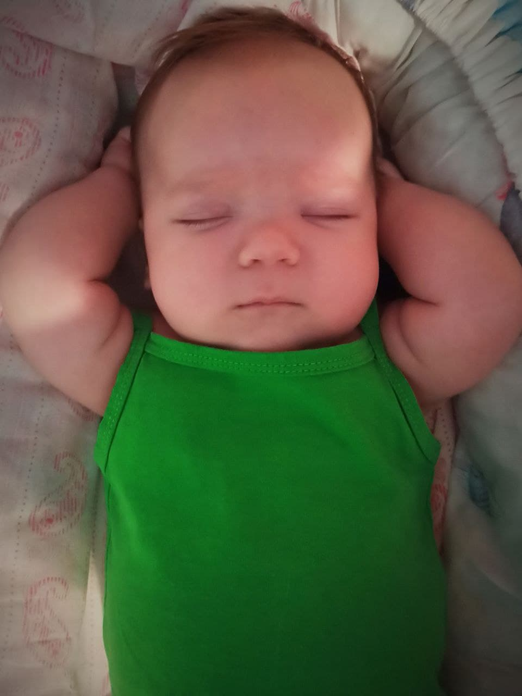
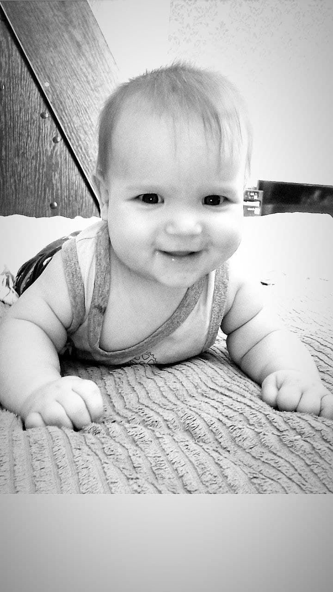

 Поздравляем с рождением малыша! Сейчас Вы испытываете целую гамму эмоций, ведь каждый Ваш день теперь полон невероятных открытий! Первый месяц – это период адаптации новорожденного к новым условиям вне утробы матери, а также время значительных перемен в привычном ритме жизни родителей. Чтобы «боевое крещение» прошло успешно, нужно свести к минимуму стресс первых дней, когда Вы остались с крохой один на один. Отложите все остальные дела, не приглашайте гостей без лишней необходимости. Папа и остальные близкие должны взять работу по дому на себя, а Вы – посвятить время новорожденному. Одна из самых главных задач первых недель жизни ребенка – наладить грудное вскармливание. Нужно освоить правильную технику прикладывания крохи к груди и позиции для кормления. Еще один важный фактор – кормление «по требованию»: предлагайте ребенку грудь столько раз, сколько он захочет, а не по часам. Главное сейчас – настроиться на позитив и сконцентрироваться на Вашем малыше, тогда успех обеспечен. Наиболее оптимальная температура в помещении, где находится новорожденный, должна держаться на уровне 21-22°С, а влажность – около 50%. Гулять с ним можно через 1-2 дня после выписки из роддома. Летом начиная с 15-20 минут и постепенно увеличивая это время. А зимой выходить с малышом на первую прогулку следует не раньше двухнедельного возраста при температуре не ниже -5°С. Продолжительность первых прогулок в холодное время года должна быть не более 10-15 минут. Не переживайте, у Вас все получится! Тем более, что в первый месяц к Вам домой еженедельно будут приходить участковые педиатр и медсестра, с которыми можно будет проконсультироваться. Ожидайте первое посещение врача уже в первые три дня после прибытия из роддома.
 Малыш рождается далеко не таким беспомощным, как Вы думаете. Природа наделила его множеством рефлексов, которые помогают адаптироваться к условиям окружающей среды, пока у него не сформируется осознанная двигательная активность. Например, сосательный и поисковый рефлексы помогают новорожденному во время кормления. Проверить сосательный рефлекс можно, вложив палец в ротик ребенка. Малыш должен совершать сосательные движения. А если погладить уголок его рта или щечку, то кроха повернет голову в сторону раздражителя – это поисковый рефлекс. Ребенок сжимает ладошку в кулак, если ее погладить, демонстрируя хватательный рефлекс. Ну а если положить малыша на животик, то он будет совершать ползающие движения. Так проявляет себя рефлекс ползания. Попробуйте прикоснуться к его ступням ладонью – и ребенок оттолкнется от нее, ускорив движения. От новорожденного к грудничку После 28 дней жизни Ваш малыш меняет свой статус. Он перестаёт называться новорожденным, теперь он просто грудничок. К концу первого месяца блуждающий взгляд ребенка постепенно становится более осмысленным. Он непродолжительное время фиксирует глазами яркие предметы. Четче всего малыш видит то, что находится на удалении 25-30 см от его лица. Именно на такое расстояние Вам лучше всего наклониться над ним, чтобы пообщаться. Ребенок уже может проявлять активный интерес к предметам с четкими очертаниями или контрастной расцветкой. Для развития зрения Вы можете начать показывать ему черно-белые геометрические картинки (например, изображение спирали, куба). Малыш пока реагирует только на громкие звуки, голоса или музыку. Его реакции выражаются в общем двигательном беспокойстве, крике – кроха может плакать, махать руками и ногами, выгибать тело, если его напугал шум. Движения для ребенка в таком возрасте – это неотъемлемая часть эмоционального возбуждения. Как правило, они являются сигналом для родителей о том или ином дискомфорте и необходимости удовлетворить какую-либо потребность малыша: накормить, утолить жажду, поменять подгузник и так далее. С момента рождения ребенок непроизвольно улыбается, если он всем доволен. Сначала это происходит во сне, затем после кормления и во время купания. Чем больше Вы улыбаетесь малышу и разговариваете с ним, проявляя положительные эмоции, тем скорее он ответит Вам взаимностью.
 Значительную часть времени (16-18 часов в день) новорожденный проводит во сне, с промежутками на кормление через каждые 2-3 часа. Существуют различные состояния сна: Глубокий сон, во время которого ребенок полностью расслаблен, глаза закрыты, он дышит ровно, медленно и глубоко. Поверхностный сон, когда малыш более часто, не так ровно дышит, подергивает руками и ногами. Иногда можно различить, как под веками двигаются глазные яблоки. Дремота, возникающая во время кормления или перед сном. Глаза дремлющего ребенка полузакрыты. Чтобы привить малышу навыки здорового сна, нужно придерживаться определенных правил. Важно, чтобы он спал при комфортной температуре. Располагайте кроватку не ближе одного метра от окна и батареи. Проветривайте комнату перед сном. Не укутывайте малыша теплым одеялом, если в комнате тепло, ведь новорожденные быстро перегреваются. Чтобы свести к минимуму вероятность несчастного случая, не укладывайте ребенка спать на живот, а также не оставляйте в кроватке посторонние предметы, игрушки, пуховые одеяла. Спать малыш должен без подушки. Постепенно обучайте ребенка различать день и ночь. Днем нужно проявлять максимум активности: играть, петь песни и делать упражнения, а также не приглушать обычные шумы, такие как: звук телевизора, стиральной машины, телефона. А ночью наоборот – сведите шум к минимуму, не разговаривайте с малышом слишком долго и громко, не играйте с ним. Через некоторое время он поймет, что ночью нужно не бодрствовать, а спать. Проявите немного терпения, и вскоре кроха наградит Вас спокойными ночами. Удачи! Материал подготовлен на основании учебника «Пропедевтика детских болезней», под редакцией Воронцова И. М., Мазурина А. В. 3-е изд., доп. и перераб. — СПб: ООО «Издательство Фолиант», 2009. — 1008 с. SEE NEXT MONTH ВОЗМОЖНО, ВАМ БУДЕТ ИНТЕРЕСНО Подробнее >> Подробнее >> Подробнее >> Подробнее >> *Важное примечание: Грудное молоко - лучшее питание для ребенка, его необходимо сохранять как можно дольше. Если грудное вскармливание невозможно, педиатр поможет Вам подобрать молочную смесь по составу и свойствам приближенную к грудному молоку. Главная страницаПитание малышаРазвитие малышаПродуктыПочему Similac?Где купить?КонтактыКарта сайта Abbott GlobalAbbott RussiaПолитика по персональным даннымУсловия онлайн-использования© Abbott Laboratories, 2021